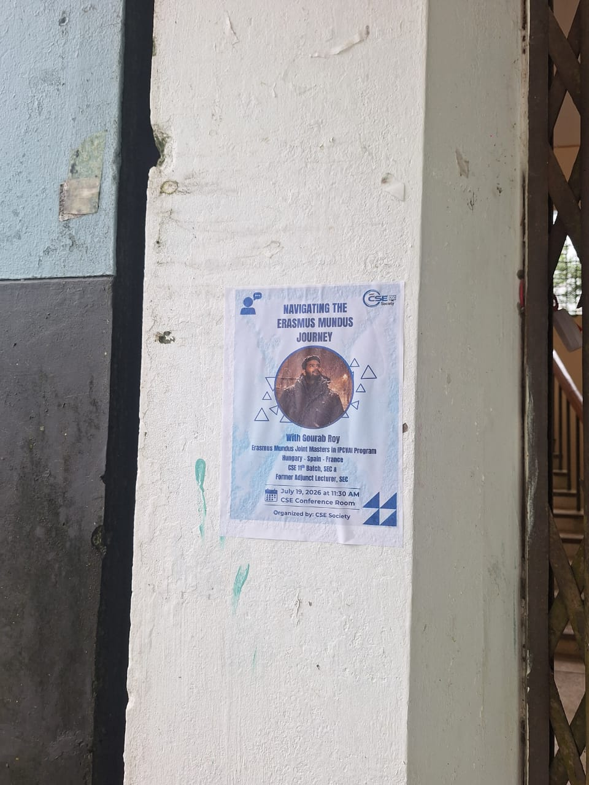
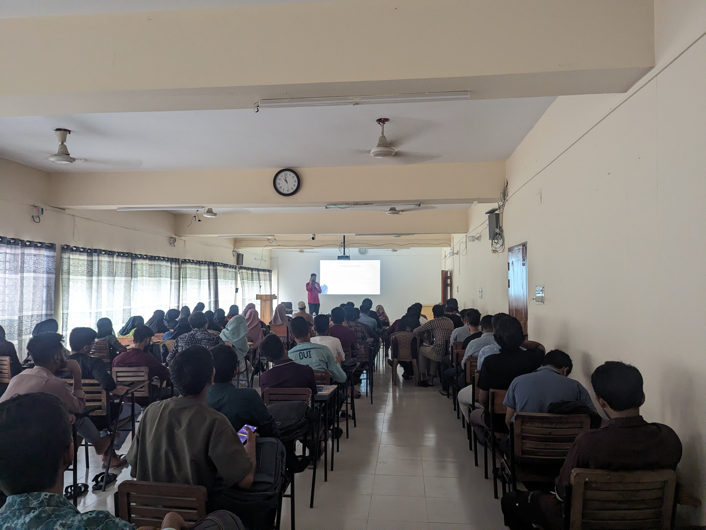
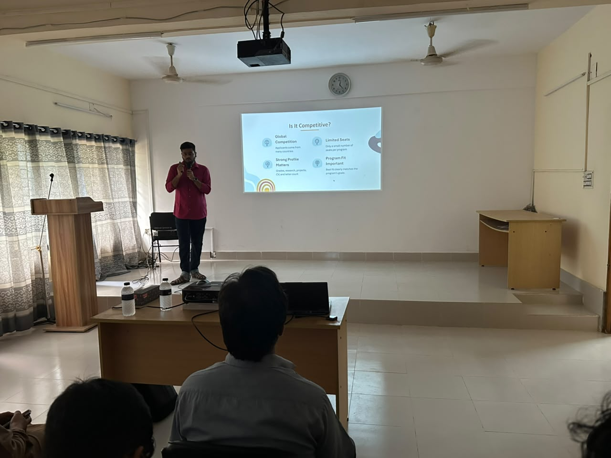
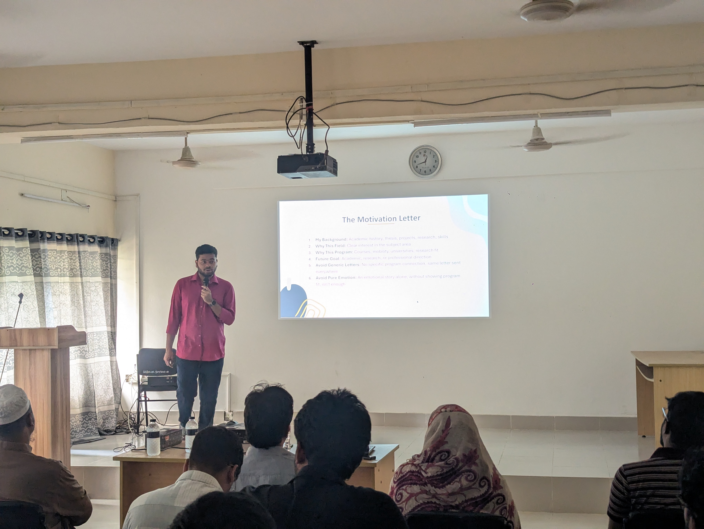
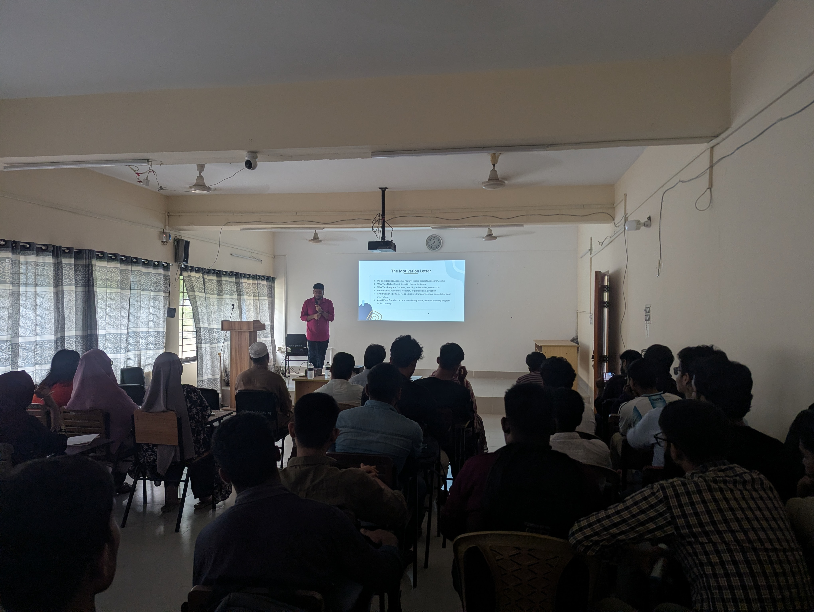
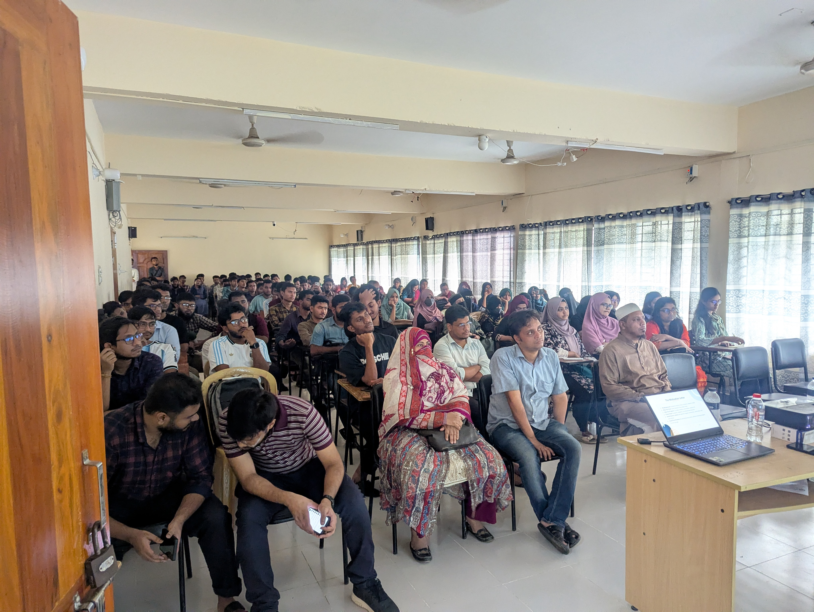

On July 19, 2026, I had the chance to return to Sylhet Engineering College, this time not as a regular student sitting quietly in the audience, but as the person standing in front of the room with a microphone in hand. The seminar was organized by the CSE Society, and the topic was something very close to my own life now: the road to Erasmus Mundus.
The official title was Navigating the Erasmus Mundus Journey, but honestly, I wanted it to feel less like a formal lecture and more like a real conversation with juniors, teachers, and friends. I was once in that same place, trying to understand what opportunities existed outside Bangladesh, what a strong application looked like, and whether someone from SEC could actually make it into a competitive European master's program. So the main message was simple: yes, it is possible, but you need a clear story, preparation, and consistency.
From Sylhet Engineering College to Europe, with a focus on the IPCVAI Erasmus Mundus Joint Master.
IPCVAI scholar, CSE 11th batch SEC, and former adjunct lecturer at SEC.
A campus seminar hosted in the CSE Conference Room.
A student-organized session for sharing practical guidance with CSE students.
Why This Seminar Mattered To Me
Coming back to SEC felt personal. This is where my undergraduate journey started. I completed my B.Sc. in Computer Science and Engineering here, worked on my thesis, learned the basics of research, taught as an adjunct lecturer, and slowly built the profile that later helped me get selected for IPCVAI: AI for Image Processing and Computer Vision.
I did not want to stand there and make Erasmus Mundus sound like some magical thing that only perfect students can get. That would not be honest. It is competitive, yes. It has global applicants and limited seats. But the important point I kept repeating was this: you do not need a perfect profile, you need a connected profile. Your grades, thesis, projects, research, CV, recommendation letters, and motivation letter should all tell one clear story.

What We Covered
I divided the seminar into four main parts so that the students could follow the full path, not just hear the success story at the end. First, I explained what Erasmus Mundus is and why someone should apply. Then I shared my own journey and profile before applying. After that, we moved into the practical side: documents, motivation letters, recommendation letters, timelines, mistakes, and how to choose the right program. Finally, I talked about life in Europe after selection, because getting selected is not the final boss. It is just the beginning of a much bigger adjustment.
So, What Is Erasmus Mundus?
I started with the basic question because many students hear the name "Erasmus Mundus" but are not always sure what it actually means. In simple words, Erasmus Mundus Joint Masters are international master's programs jointly offered by multiple European universities. Students usually study in two or more countries, and the program combines academic training, research exposure, cultural experience, and often scholarship support.
I explained that this is different from applying to one normal master's program at one university. In a general application, you usually apply to one university, and funding may be handled separately. In Erasmus Mundus, you apply to a joint master's program, and for many programs the scholarship consideration is part of the same application. Also, the study path is different because you move between partner universities and countries.
The reasons to apply are clear: you get multi-country study, exposure to different teaching systems, a global cohort, strong academic and research opportunities, and in many cases support for tuition, allowance, travel, and insurance. For students from Bangladesh, this can be a life-changing academic opportunity, especially if they are serious about research, industry growth, or a future PhD.
Is It Competitive?
Yes, it is competitive. I did not want to hide that part. Applicants come from many countries, seats are limited, and committees see strong profiles every year. But competition does not mean students should be scared away. It means they need to be more intentional.
A strong profile matters, but program fit matters just as much. Grades, research, projects, CV structure, motivation letter, and recommendation letters all count. But the committee also wants to understand why this specific program makes sense for you. If your background, interests, and future goals connect naturally with the program, your application becomes easier to believe.
I also talked about different types of candidates. Some students are strong academically, with a good CGPA and clean transcript. Some are more research-focused, with thesis work, publications, or a clear research direction. Some are engineering-focused, with projects, coding skills, and GitHub work. And then there are balanced candidates who combine grades, projects, motivation, and fit. Any of these can work, but the story has to be clear.

Who Should Apply?
My answer was: apply if you have academic consistency, real interest in your field, and enough patience to prepare properly. A good applicant should have strong basics, clear motivation, and some relevant experience through projects, thesis, research, internship, teaching, or technical work. Adaptability also matters because Erasmus Mundus is not only study. It means new countries, new cultures, new grading systems, new weather, new food, and sometimes new loneliness too.
I told the students that pressure handling is important. Deadlines, exams, documents, visa work, housing, and uncertainty can all arrive together. A student who can stay calm, ask for help, and keep moving has a real advantage. Again, the goal is not perfection. The goal is consistency.
My Own Profile Before Applying
Then I shared my own profile, because I think students understand things better when they see a real example. Before applying, I had my academic background from SEC with a CGPA of 3.56 out of 4.00. My thesis was connected to CerebralNet, where I worked around brain imaging, classification, and detection. My research and publication direction included medical imaging, computer vision, OCR, and machine learning.
I also had teaching experience as an Adjunct Lecturer in the CSE Department, plus projects and skills in deep learning, computer vision, NLP, and PyTorch. For English proficiency, I used IELTS. None of these things alone selected me. What helped was that they pointed in a similar direction: image processing, computer vision, AI, medical imaging, and research.
I made this point very clearly during the seminar: my profile was not perfect. But it was connected. My thesis connected with my research interests. My projects supported the direction I wanted. My teaching experience showed communication and academic maturity. My motivation letter tied my past work, present interest, and future goal together. That connected story helped a lot.
What Helped Me Most
- Program fit: my background matched image processing, computer vision, and AI.
- Research direction: my thesis and projects were connected to medical imaging and deep learning.
- Publications and projects: they showed that my interest was not only written in the motivation letter, but also visible in my work.
- Teaching experience: it helped show communication skills and academic maturity.
- Motivation letter: I connected my past work, the program structure, and my future goals into one clear narrative.
If I had to reduce it to one sentence, I would say this: a good application should feel like one story, not six random documents uploaded together.
What I Would Improve If I Applied Again
I also shared what I would improve, because this is the part juniors usually need most. If I could go back, I would start earlier. I would prepare the CV, documents, and English test before the application season became stressful. I would target programs more carefully instead of just looking at famous names. I would polish the CV more and keep it short, academic, and focused on relevant work only.
I would also customize each motivation letter properly. Sending the same generic letter everywhere is one of the easiest ways to weaken an application. Every program has different courses, mobility paths, labs, and goals, so the letter should reflect that. And finally, I would track everything in a spreadsheet: program name, field, deadline, eligibility, document status, recommendation letters, motivation letter status, scholarship status, result, and notes. Being organized is not a small thing. Selection is partly about qualification, but it is also about preparation.
The Documents Students Need
One practical part of the seminar was about documents. A typical Erasmus Mundus application usually needs an academic CV, a motivation letter, recommendation letters, transcript, degree certificate, English proficiency proof, passport, and the online application form from the program website.
For the CV, I suggested using Europass or a clean academic CV. The slide said max two pages, because the committee should be able to understand your profile quickly. The CV should highlight education, thesis, projects, research, publications, technical skills, teaching or work experience, and achievements. For language skills, using CEFR levels makes the CV easier to read in a European context.
For recommendation letters, my advice was very simple: choose someone who actually knows your work. A teacher, thesis supervisor, project mentor, or research supervisor is better than a famous person who cannot write anything specific. Ask early, share your CV, transcript, motivation letter draft, and program details, and make it easy for them to write a strong, honest letter. A good letter should mention real examples of your skills, projects, academic performance, research potential, and fit for the field.
The Motivation Letter

The motivation letter got a lot of attention, and for good reason. Many students think the letter is only about writing something emotional or impressive. But in an Erasmus Mundus application, the letter has to do a more practical job. It needs to explain your background, why you care about the field, why the specific program is right for you, and what you want to do after the program.
I told them to structure it around four things: my background, why this field, why this program, and future goal. The background should include academic history, thesis, projects, research, and skills. The field section should explain why you are interested in that subject area. The program section should be specific: courses, mobility, universities, labs, research directions, thesis options, or any part of the program that genuinely matches you. The future goal should show where this degree fits in your academic, research, or professional direction.
The two biggest mistakes are generic letters and pure emotion. A generic letter sounds like it could be sent to any program. A purely emotional letter may be meaningful, but if it does not show program fit, it is not enough. The strongest letters are personal, but also specific and realistic.
Choosing The Right Program
This is where many applicants lose focus. They see a famous program name and apply without checking whether their background actually matches. I told the students to check six things before applying: field match, course structure, mobility path, scholarship status, eligibility, and future goal.
Field match means the program should connect with your background and interests. Course structure means the subjects, specializations, and thesis options should make sense for you. Mobility path means you should understand which countries and universities you will move through. Scholarship status matters because some intakes may have different funding availability. Eligibility means degree requirements, English score, documents, and deadlines. Future goal means you should know whether the program supports your plan for research, PhD, industry, or another direction.
The selection steps are also not complicated if you take them seriously. First, identify your field and academic background. Then shortlist programs that match. After that, check fit carefully: field, courses, mobility, scholarship, eligibility, and goals. Then apply with a clear, well-explained fit narrative. That last phrase matters a lot. A clear fit narrative is what makes the application feel intentional.
Good Fields And Programs For CSE Students
Since the audience was mostly from CSE, I also shared fields that can be a good match for computer science students. Artificial intelligence is the obvious one, especially machine learning, deep learning, computer vision, and NLP. Data science and analytics can also fit well, including big data, statistics, decision support, and visualization. Cybersecurity and cloud are strong directions too, covering network security, cryptography, cloud computing, and IoT.
Software engineering, robotics, embedded systems, autonomous systems, edge AI, and medical imaging are also worth checking depending on your profile. For students who have worked with healthcare data, image processing, or biomedical AI, medical imaging can be a very strong direction.
Some programs I mentioned were IPCVAI for AI, image processing, and computer vision; EMAI for artificial intelligence; CoDaS and BDMA for data science, communication, big data management, and analytics; EDISS for data-intensive intelligent software systems; SECCLO and CyberMACS for security, cloud computing, and applied cybersecurity; and IFROS for intelligent field robotic systems.
My Program: IPCVAI
I spent some time explaining my own program, IPCVAI, because it matched my background very naturally. The field is AI, image processing, and computer vision. The mobility path is Hungary, Spain, and France. The academic focus connects strongly with deep learning, medical imaging, and explainable AI.
The first semester at PPKE in Budapest gave us foundation courses and ML/DL basics. The second semester at UAM in Madrid moved deeper into computer vision, deep learning, 3D vision, and project-based technical work. The next stage in Bordeaux, France connects with explainable AI, advanced IPCV topics, and then internship or thesis placement. For me, this made sense because my CSE background, medical imaging work, AI interest, and computer vision projects were already pointing in that direction.

Life Abroad: Budapest First
After the application part, I moved into life abroad. This part was important because many students imagine the scholarship and the Europe part, but not the daily life part. My first semester was at PPKE Budapest, and it taught me very quickly that getting selected is only the beginning.
The academic system was different. The teaching style, grading, assignments, exams, and expectations did not feel exactly like what I was used to. The courses included image processing, machine learning, deep learning, and multimodal systems. The classroom was international, so classmates came from different countries and academic backgrounds. That was exciting, but it also meant I had to learn how to communicate, collaborate, and ask questions in a new environment.
Living in Budapest also meant adjusting to culture, transport, weather, food, housing, and daily routines. The first semester challenges were real: academic pressure, time pressure, living alone, cooking, cleaning, budgeting, winter, language, administrative work, residence permit, insurance, housing, and missing home. None of these are dramatic in isolation, but together they can feel heavy in the first month.
What I learned from Budapest was academic independence. No one reminds you every day. You have to take responsibility for your own learning. Time management becomes survival. Asking seniors, classmates, teachers, and coordinators for help makes life easier. Working with international classmates builds confidence. And slowly, you adjust. My honest summary was: survival comes first, then improvement comes naturally.
Then Madrid Made It More Intense
The second semester at UAM Madrid was more intense academically. We had advanced technical courses in deep learning, computer vision, 3D vision, and visual signal processing. There were assignments, experiments, coding tasks, presentations, reports, exams, and multiple submissions close to each other. Erasmus Mundus gives opportunity, but it also gives real pressure.
I also talked about my TRDP research, which focused on explainable AI for multimodal models. The technical work involved CLIP, BERT, attention maps, statistical filtering, reproducing methods, testing variants, and analyzing outputs. There were weekly supervisor meetings, feedback, corrections, reports, slides, and presentations. This is where research starts to feel like a real workflow: idea, literature, experiments, results, and then communication.
Madrid taught me that technical depth matters, but communication matters too. You need math and coding basics, but you also need to explain your ideas clearly. Continuous deadlines can be tiring, so small weekly progress is better than trying to fix everything at the last moment. Talent helps, but consistency saves you. I said that in the seminar because I really believe it now.
The Everyday Side Of Europe
I did not want to make life in Europe sound like only classrooms and travel photos. There is also cooking, grocery shopping, finding halal or deshi food, paying rent, deposits, shared housing, metro cards, buses, trains, mobile SIMs, and figuring out small things in a language you may not fully understand yet.
Friends and community matter a lot. International classmates can make a new city feel less lonely. Local communities help too. But loneliness can still happen, especially when you miss family, food, language, and the easy comfort of home. I think it is important to say this openly because students should not feel weak if they struggle after moving abroad. Almost everyone struggles in some way; they just do not always post about it.
Money And Funding Reality
The funding discussion was also practical. Scholarships can be full, partial, fee-waiver based, or sometimes students may be self-funded. Living costs vary a lot between cities. Budapest, Madrid, and Bordeaux do not cost the same. The first month can be especially expensive because of housing deposit, travel, SIM card, transport pass, groceries, basic setup, and emergency costs.
Monthly budgeting should include rent, food, transport, mobile, study materials, and emergency money. Mobility expenses are easy to underestimate because moving between countries is not the same as normal travel. You may need flights or trains, luggage planning, temporary housing, new deposits, and new documents. My advice was to calculate scholarship plus savings minus expected expenses before accepting an offer, so the dream does not become financially confusing after arrival.
Travel, Mobility, And Admin Work
Erasmus Mundus mobility sounds beautiful from the outside, and it is beautiful, but it also requires planning. You have to manage flights, trains, luggage, arrival dates, university letters, visa or residence permit steps, insurance, registration, and housing contracts. You also need to set up every new city: SIM card, transport pass, grocery shops, bank or card setup, and a daily routine.
Emotionally, every move means leaving one comfort zone and building another. That is not easy, but it makes you stronger in a quiet way. By the time you have handled a few moves, you stop panicking at every new administrative email. You still may not enjoy it, but you know you can handle it.
What Nobody Tells You
I had one section called "What Nobody Tells You," and I think this was one of the most honest parts of the seminar. The first month is hard. Admin takes time. No one reminds you of everything, so you must track your own tasks. Academic pressure can overlap with exams, labs, reports, and moving stress. Loneliness can happen. Housing, travel, and schedules may change. The good news is that you slowly grow stronger.
The things that made life easier for me were staying organized, asking seniors, building friendships, keeping a routine, communicating early, and accepting imperfection. Not everything will go perfectly. Sometimes you will cook badly, miss a deadline warning, misunderstand a form, or feel tired for no clear reason. The goal is not to have a perfect abroad life. The goal is to adjust, learn, and continue.

The Application Timeline I Suggested
For students who want a simple timeline, I suggested starting around August. In August, get the passport ready, understand what Erasmus Mundus Joint Masters are, and begin English preparation. In September and October, sit for IELTS or TOEFL if needed, search programs, and start shortlisting. In November, prepare the CV, draft letters, and contact recommenders.
December should be for reviewing documents, customizing motivation letters, and submitting early where possible. January and February are usually heavy application months, so students should submit applications, track deadlines, and prepare for interviews if the program has them. Around March, results, interviews, reserve lists, and next steps usually start coming. Exact dates vary by program, but this kind of structure helps students avoid last-minute panic.
A Simple 6-Month Action Plan
- Month 1: explore Erasmus Mundus, understand fields, and learn the different program types.
- Month 2: prepare the basics: passport, transcript, certificate, and first CV draft.
- Month 3: strengthen the profile through projects, thesis direction, research, GitHub, or papers.
- Month 4: focus on IELTS or TOEFL preparation and exam planning.
- Month 5: build the program list by checking eligibility, courses, mobility, scholarships, and deadlines.
- Month 6: finalize motivation letter drafts, recommendation letters, CV, document review, and submissions.
Common Mistakes I Warned About
The first mistake is sending a generic motivation letter. The second is choosing programs randomly because the name sounds famous. The third is having a weak CV structure: too long, messy, or not focused on relevant work. Another common mistake is asking for recommendation letters too late, which puts pressure on teachers and usually leads to weaker letters.
Students also ignore eligibility more often than they should. If a program requires a certain degree background, English score, or document format, do not assume it will be fine. Read the website carefully. And finally, last-minute submission is dangerous. Websites can slow down, documents can have errors, recommenders can miss emails, and you may notice something wrong when there is no time left to fix it.
My Advice For SEC Students
I ended the main part with advice for the students at SEC. Start early. Do not wait until final year or the application deadline. Choose projects connected to your target field. Value your thesis, because a good thesis can become a strong part of your application story. Improve your English, not only for IELTS or TOEFL, but also for academic writing and interviews.
Keep your CV clean and focused. Highlight education, thesis, projects, research, publications, skills, teaching, and achievements. Ask for guidance from teachers, seniors, selected scholars, and current students. Most importantly, do not underestimate yourself just because you are not from a famous university. Your work, consistency, and clarity matter.
"I was once in your place, so I want to make the path clearer for you."
Useful Links And Resources
I also shared a few resources that students can use while preparing. These are not magic shortcuts, but they help you organize the process and avoid unnecessary confusion.
Official program search portal: eacea.ec.europa.eu
Always check each program website for documents, scholarships, courses, and deadlines.
CV format and profile building: europass.europa.eu
English preparation through ielts.org and ets.org/toefl
Use a spreadsheet or workspace to track programs, documents, deadlines, and results.
Real experience, guidance, and review support can save you from many small mistakes.
The slide deck also closes with my contact details for students who want to follow up: gourabroysec553@gmail.com, gourabroy551.github.io, and github.com/GourabRoy551. The presentation template credits go to Slidesgo, with icons by Flaticon and infographics/images by Freepik.
The Q&A Part
The session ended with a Q&A, and I wanted that part to stay open and practical. For this kind of topic, students usually carry very specific worries: how early to start, whether CGPA is enough, how much research matters, what to do about IELTS, how to ask for recommendation letters, and whether projects can help if publications are not there yet. These are normal questions, and they deserve direct answers.
My answer to most of them came back to the same idea: do not wait for the perfect moment. Start preparing with what you have. Build relevant projects. Talk to teachers. Read program pages carefully. Improve your English. Write your story honestly. Ask for feedback. Track the process. And if one application does not work, that does not mean the journey is finished.
What I Took Away
For me, this seminar was more than a talk about applications. It was a full-circle moment. I came from SEC, learned here, taught here, and then got the chance to stand in the same environment and share what I learned from Budapest, Madrid, and the IPCVAI journey. That felt special.
I hope the students left with a clearer picture of Erasmus Mundus, but also with a little more confidence. The path is not easy, but it is not invisible either. If you know what to prepare, how to tell your story, and how to stay consistent, the road becomes much clearer.
And that was really the whole point of the seminar: to make the path clearer for the next person from SEC who wants to try.